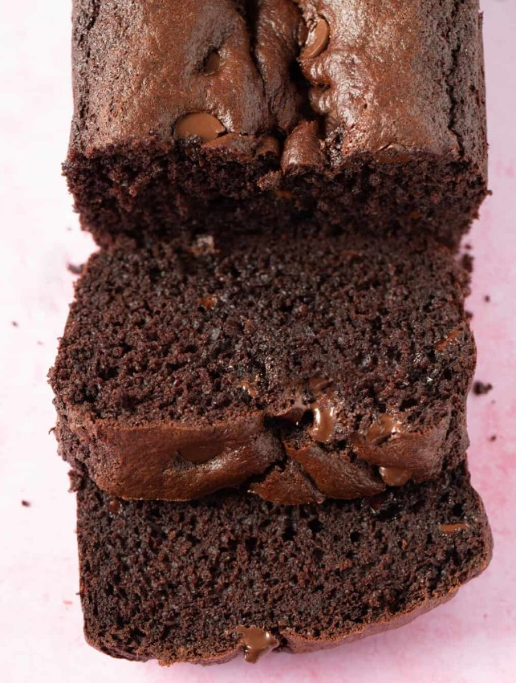
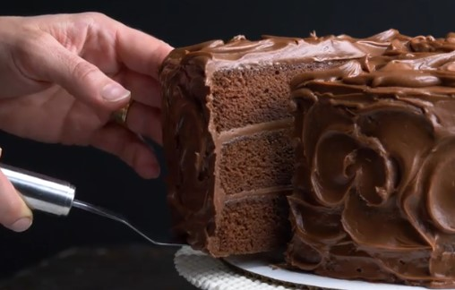

1 and 1/4 cup of plain flour or all purpose flour.
1/2 cup cocoa powder, sifted
1 teaspoon baking soda
1 and 1/2 teaspoons baking powder
1/4 teaspoon salt
1/2 cup brown sugar
1/4 cup granulated sugar
1/2 cup or 1 stick unsalted butter, melted and cooled
1 teaspoon vanilla extract
2 large eggs
3/4 cup full fat buttermilk
3/4 cup chocolate chips
instructions
Grease and line your 9 by 5 inch loaf pan with baking or parchment paper. Preheat oven to 180 C (350 F) standard / 160 C (320 F) fan-forced.
In a large mixing bowl, add flour, cocoa, baking soda, baking powder, salt, brown sugar and caster sugar. Gently stir.
In a separate small bowl, add melted butter, vanilla and eggs. Whisk with a fork just to break up the egg yolks.
Make a well in the middle of your dry ingredients. Add wet ingredients along with buttermilk. Stir gently using a spatula until the mixture is combined – be careful not to over-mix.
Stir through 75 grams (1/2 cup) of chocolate chips to the batter.
Transfer mixture to prepared pan and sprinkle the extra 35 grams (1/4 cup) of chocolate chips on top.
Bake for approximately 40-45 minutes or until a knife inserted into the middle comes out clean. Leave to cool completely on a wire rack.

Sandy’s Chocolate Cake
Ingredients
1 cup butter, softened
3 cups packed brown sugar
4 large eggs, room temperature
2 teaspoons vanilla extract
2-2/3 cups all-purpose flour
3/4 cup baking cocoa
3 teaspoons baking soda
1/2 teaspoon salt
1-1/3 cups sour cream
Frosting
1/2 cup butter, cubed
3 ounces unsweetened chocolate, chopped
3 ounces semisweet chocolate, chopped
5 cups confectioners' sugar
1 cup sour cream
2 teaspoons vanilla extract
instructions
Preheat oven to 350°. Grease and flour three 9-in. round baking pans.
In a large bowl, cream butter and brown sugar until light and fluffy, 5-7 minutes. Add eggs, 1 at a time, beating well after each addition. Beat in vanilla. In another bowl, whisk flour, cocoa, baking soda and salt; add to creamed mixture alternately with sour cream, beating well after each addition. Stir in water until blended.
Transfer batter to prepared pans. Bake until a toothpick comes out clean, 30-35 minutes. Cool in pans 10 minutes; remove to wire racks to cool completely.
For frosting, in a metal bowl over simmering water, melt butter and chocolates; stir until smooth. Cool slightly.
In a large bowl, combine confectioners' sugar, sour cream and vanilla. Add chocolate mixture; beat until smooth. Spread frosting between layers and over top and side of cake. Refrigerate leftovers.

Ultimate Double Chocolate Brownies
Ingredients
3/4 cup baking cocoa
1/2 teaspoon baking soda
2/3 cup butter, melted, divided
1/2 cup boiling water
2 cups sugar
1/2 cup brown sugar
2 large eggs, room temperature
1-1/3 cups all-purpose flour
1/4 teaspoon salt
2 large eggs
1/2 cup coarsely chopped pecans
2 cups (12 ounces) semisweet chocolate chunks
instructions
Preheat oven to 350°. In a large bowl, combine cocoa and baking soda. Stir in 1/3 cup melted butter. Add boiling water; stir until well blended. Stir in sugar, eggs, remaining 1/3 cup melted butter and vanilla. Combine flour and salt; stir into cocoa mixture. Stir in pecans and chocolate chunks.
Pour into a greased 13x9-in. baking pan. Bake until brownies begin to pull away from sides of pan, 35-40 minutes. Cool in pan on a wire rack